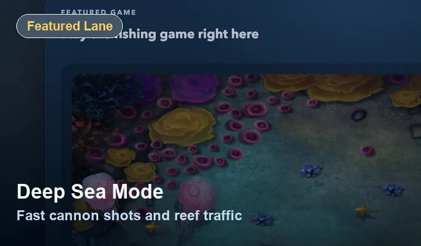
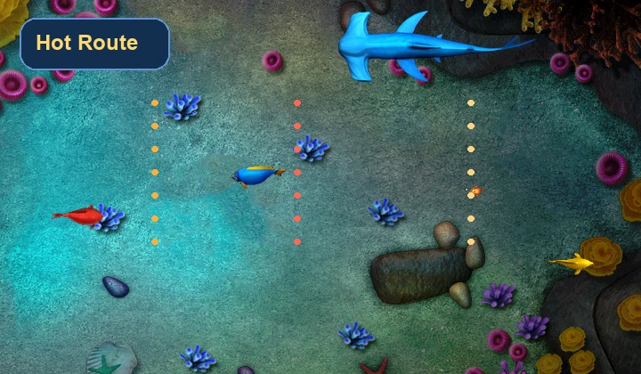
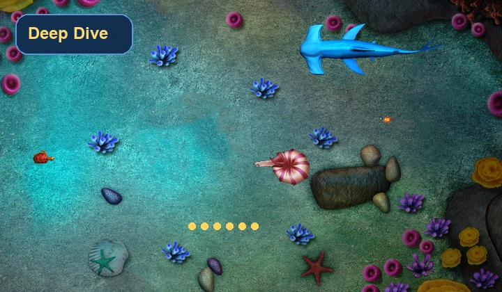

How To Play
Simple input, readable feedback
Most improvement comes from timing and anticipation rather than button complexity. Watch where each school is headed, fire ahead of the lead fish, and use short sessions to learn the movement patterns.
Featured Game
This page gives the fishing game more room, a better fullscreen option, and just enough extra context to help without slowing you down.
Play Now
Fullscreen tip: if you want the closest thing to a cabinet view in the browser, expand the canvas before a longer session.
If the fish feel crowded on the homepage, this is the cleaner screen to use.
How To Play
Most improvement comes from timing and anticipation rather than button complexity. Watch where each school is headed, fire ahead of the lead fish, and use short sessions to learn the movement patterns.
Screen Feel
Fishing games read better when the water, fish paths, and lower UI are not squeezed between too many extra elements.
Related Routes



Guide
Read why fish lanes, hit feedback, and fast retries make the loop stick.
Advertisement Placeholder
FAQ
Yes. The game canvas scales inside a responsive container so it stays readable on smaller screens.
No. This featured fishing game runs in the browser with no installer step.
Because the main play area should stay easy to read and easy to control.
After This Run
Go back home, switch to a different route, or pick one short article before your next round.